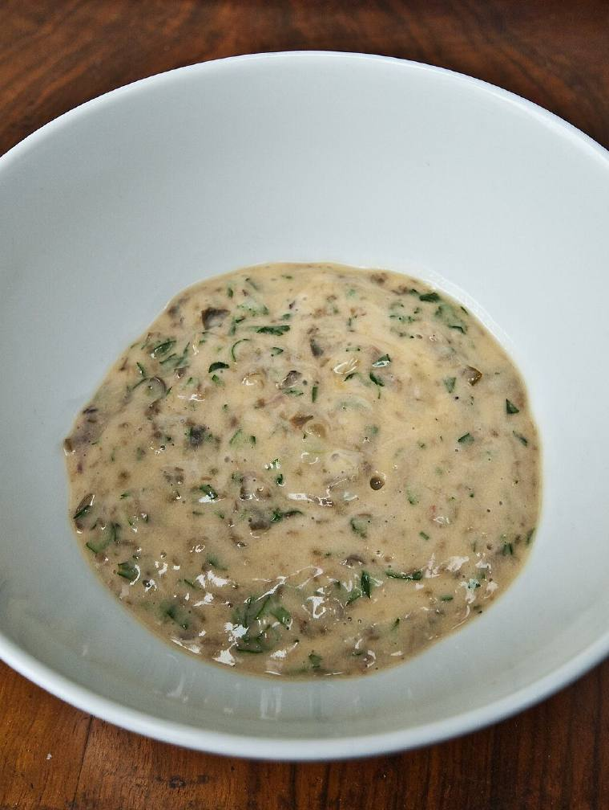

Sauces

Sauces
Sauce rémoulade
Préparation : 15 min
Ingrédients (pour 8 personnes)
- 2 jaunes d’œufs
- 35 cl d’huile neutre ou d’olive
- 2 cuillères à soupe de moutarde
- 2 cuillères à soupe de vinaigre
- 1 échalote
- 1 cuillère à soupe de câpres
- 2 cornichons
- persil, ciboulette, sel, poivre
Quantités adaptées. Les temps de cuisson ne sont pas recalculés.
- Fouetter jaunes, moutarde, vinaigre et échalote finement hachée.
- Verser l’huile peu à peu en fouettant, comme une mayonnaise, saler et poivrer.
- Incorporer câpres, cornichons et herbes hachés fin.
À conserver au froid, jamais au placard
Au réfrigérateur entre 0 et 4 °C : 24 heures au plus. Ne pas congeler. Œuf cru : préparer au plus près du repas, jamais pour les jeunes enfants, femmes enceintes, personnes âgées ou fragiles, sauf avec de l’œuf pasteurisé.
AstucePour le céleri rémoulade, ne garder que la base moutardée, sans câpres ni cornichons.
D’après une recette Demotivateur. Texte reformulé.